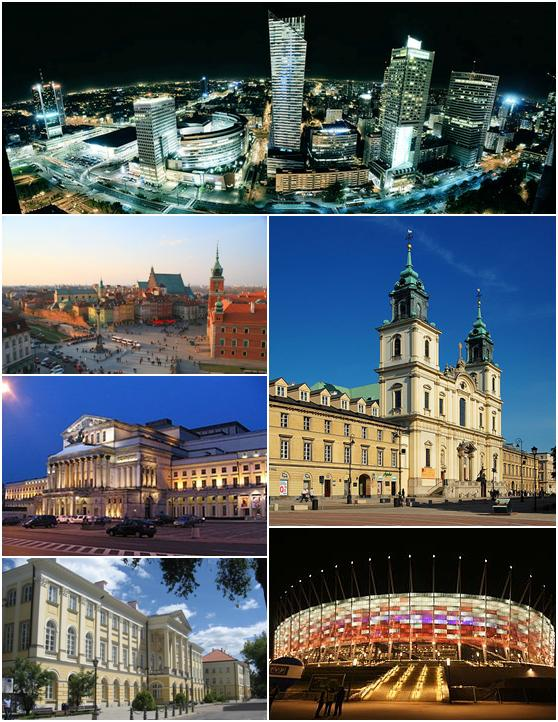
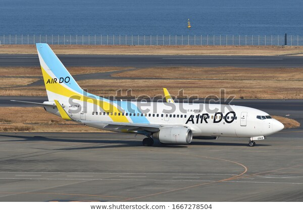

Koniec - Berlin
 Przylot: 20:15, 28.03.2020
Przylot: 20:15, 28.03.2020
Pogoda: bezchmunie

Wylot: 18:10, 28.03.2020
Pogoda: deszcz
Przylot: 20:15, 28.03.2020
Pogoda: bezchmunie

Czas lotu: 2:05
Typ samolotu: Boeing 737
Liczba miejsc: 100
- miejsce 3F
- miejsce 1B
- miejsce 2A
- miejsce 3D
- miejsce 2B
- miejsce 1C
- miejsce 2C
- miejsce 1F
- miejsce 3C
- miejsce 2D